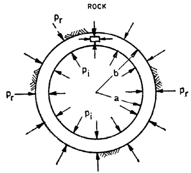

STRUCTURAL DESIGN OF SURGE SHAFT
The design of surge shaft has been carried out based on IS 7357:1974.
TYPES OF LINING
1. Pneumatically applied lining
In this category of lining, the concrete mixed of coarse aggregate size less than 5mm, sand and cement, applied pneumatically on the rock surface with or without reinforcement mesh. This type of lining is called sprayed concrete or shotcrete.
2. Cement concrete lining
Plain concrete may be adopted when hard self-supporting rock but not good as surface where pneumatically applied lining has been carried out.
3. Reinforced concrete lining
This type of lining shall be adopted in rock of inadequate strength and stability.
4. Steel lining
Where the surrounding rock is not good or there are several openings of various sizes and shapes piercing the periphery of the surge shaft lining thus introducing concentrations of stresses around such opening, there are chances of even reinforced concrete lining cracking due to concentration of stress and providing chance for sizable seepage of water int the small hill mass around. In such cases, especially if the dips and strikes are unfavorable including soft material along such strikes thereby including slides of hill mass, steel lining shall be provided.
5. Sandwiched steel lining
DESIGN LOADS
1. Internal water pressure
2. External water pressure
3. External grout pressure (Contact grouting)
4. External rock pressure
It is assumed that rock loads have been carried by the primary supports such as rock bolts, shotcrete, steels ribs and therefore lining will not carry any rock loads.
5. Seismic stresses
In underground surge tanks, seismic factors are of no practical importance when lining is in contact with rock and may not be considered in design.
6. Dead load
7. Live load
No live load has been considered in underground surge shaft.
STRUCTURAL DESIGN
1. Supporting Action of Rock:
Reinforced concrete lining transmits pressure to the surrounding rock under ideal conditions of no void and infinite rock mass. The load shared by the rock can be determined by following formula by equating the displacements of outer circumference of the concrete ring with extension of rock boundary.
\(P_r=σ_t\frac{\frac{E_R M_R}{M_R+1}}{\frac{E_c(M_c)^2}{(M_c)^2-1}}[\frac{(b^2+a^2)\frac{b^2-a^2}{(M_c)^2}}{2b^2}]\)Where,
\(a\) = Internal radius of shaft (cm)
\(b\) = External radius of shaft (cm)
\(E_c\) = Modulus of elasticity of concrete
\(E_R\) = Modulus of elasticity of rock
\(P_r\) = Internal pressure taken by rock (kgf/cm2)
\(σ_t\) = Permissible tensile stress in concrete (kgf/cm2)
\(\mu_R\) = Poisson’s ratio of rock
\(\mu_c\) = Poisson’s ratio of concrete
\(M_R=\frac{1}{\mu_R}\)\(M_c=\frac{1}{\mu_c}\)

2. Lining thickness
External hydrostatic pressure shall be applied to determine the thickness of lining. The thickness shall be maximum of
a) Minimum thickness of 0.3m and
b) Thickness required to resist maximum external pressure.
Considering surge shaft as a thick-walled pipe, the circumferential stress in the lining can be determined by the following formula
\(P_o=σ_c[\frac{b^2-a^2}{b^2+a^2}]\)Where,
\(P_o\) = External pressure (kg/cm2)
\(σ_c\) = Permissible compressive stress in concrete (kg/cm2)
3. Reinforcement in lining
3.1 Hoop reinforcement
The hoop reinforcement for circular tank shall be to withstand the total hoop force due to maximum internal water pressure and shall be given by following formula
\(A_{st}=\frac{(P-P_r)×a}{\sigma_{st}}\)Where,
\(P\) = Design pressure (kg/cm2)
\(\sigma_{st}\) = Permissible stress in steel (kg/cm2)
The hoop reinforcement provided in circular surge shaft shall be maximum of
a) 0.3% of concrete area of lining
b) Hoop reinforcement required for the net normal design head taking permissible tensile stress in steel; and
c) Depending upon the geology and rock cover, hoop reinforcement worked out for the maximum design head neglecting the supporting action of the rock, with higher stresses in steel.
3.2 Longitudinal reinforcement
At least 60% of hoop stress shall be provided as longitudinal reinforcement
4. Permissible stress
As per IS 456: 2000, Annex B (Clause B-2.1), the permissible tensile stresses in concrete and steel shall be taken from Tables below.
| Grade of concrete | M10 | M15 | M20 | M25 | M30 | M35 | M40 | M45 | M50 |
| Tensile stress(N/mm2 | 1.2 | 2.0 | 2.8 | 3.2 | 3.6 | 4.0 | 4.4 | 4.8 | 5.2 |
| Grade of Concrete | Permissible stress in compression (N/mm2) | Permissible stress in Bond (Average) for plain bars in tension (τbd) | |
|---|---|---|---|
| Bending (σcbc) | Direct (σcc) | ||
| M10 | 3.0 | 2.5 | - |
| M15 | 5.0 | 4.0 | 0.6 |
| M20 | 7.0 | 5.0 | 0.8 |
| M25 | 8.5 | 6.0 | 0.9 |
| M30 | 10.0 | 8.0 | 1.0 |
| M35 | 11.5 | 9.0 | 1.1 |
| M40 | 13.0 | 10.0 | 1.2 |
| M45 | 14.5 | 11.0 | 1.3 |
| M50 | 16.0 | 12.0 | 1.4 |
| SN | Type of stress in steel reinforcement | Permissible stresses in N/mm2 | Mild steel Bars confirming to Grade 1 of IS 432 (Part 1) | Medium Tensile Steel Conforming to IS 432 (Part 1) | High yield strength Deformed bars confirming to IS 1786 (Grade Fe415) |
|---|---|---|---|---|---|
| i) | Tension (σst or σsv) | Half the guaranteed yield stress subject to a maximum of 190 | |||
| a) | Up to and including 20mm | 140 | 230 | ||
| b) | Over 20mm | 130 | 230 | ||
| ii) | Compression in column bars (σsc) | 130 | 190 | ||
| iii) | Compression in bars in a beam or slab when the compressive resistance of the concrete is considered | The calculated compressive stress in the surrounding concrete multiplied by 1.5 times the modular ratio or σsc whichever is lower | |||
| iv) | Compression in bars in a beam or slab when the compressive resistance of the concrete is not taken into account | Half the guaranteed yield stress subject to a maximum of 190 | |||
| a) | Up to and including 20mm | 140 | 190 | ||
| b) | Over 20mm | 130 | 190 |
For Fe500, the permissible stress in direct tension and flexural tension and flexural tension shall be \(0.55f_y\) and the permissible stresses for shear and compression reinforcement shall be as for Fe415.
DESIGN EXAMPLE
Inputs
| Concrete grade | \(f_{ck}\) | M25 | |
| Steel grade | \(f_{y}\) | 500 | N/mm2 |
| Upsurge level | MWL | 1382.08 | m |
| Normal water level | NWL | 1367.60 | m |
| Static water level | SWL | 1363.10 | m |
| Down surge level | DWL | 1347.93 | m |
| Bottom level of shaft | IL | 1337.00 | m |
| Crown level of tunnel | CL | 1341.00 | m |
| Internal diameter of surge shaft | d | 10.00 | m |
CALCULATION
1. Calculation of permissible stress
For M25 concrete grade
Permissible compressive stress of concrete
\(\sigma_c=6.0 N/mm^2\)Permissible tensile stress of concrete
\(\sigma_t=3.2 N/mm^2\)Permissible tensile stress of steel For Fe500.
\(\sigma_{st}=0.55f_y = 0.55×500=275 N/mm^2\)Elastic modulus of Concrete (as per Clause 6.2.3.1 of IS 456:2000)
\(E_c=5000√f_{ck}=500√25 = 25000 N/mm^2\)Elastic modulus of rock
\(E_R=4000 N/mm^2\)Poisson's ratio of rock
\(\mu_R=0.15\)Poisson's ratio of concrete
\(\mu_c=0.20\)\(M_R=\frac{1}{\mu_R}=\frac{1}{0.15}=6.67\)
\(M_c=\frac{1}{\mu_c}=\frac{1}{0.2}=10\)
Assumed thickness of concrete lining
\(t=300mm\)\(a=10m\)
\(b=10+2×0.3=10.6m\)
Stress shared by rock
\(P_r=σ_t\frac{\frac{E_R M_R}{M_R+1}}{\frac{E_c(M_c)^2}{(M_c)^2-1}}[\frac{(b^2+a^2)\frac{b^2-a^2}{(M_c)^2}}{2b^2}]\)\(P_r=5.15 N/mm^2\)
Checking of lining thickness
The external pressure is assumed as 75% of internal pressure
Upsurge water level at crown of tunnel \(H=1382.08-1341.0=41.08m\)
External water level
\(h_o=41.08× 0.75 = 30.81m\)\(P_o=\sigma_c[\frac{b^2-a^2}{b^2+a^2}]\)
\(P_o=6.0×[\frac{10.6^2-10.0^2}{10.6^2+10.0^2}]=0.349 N/mm^2\)
Actual external stress
\(P_o=γ_w h_o = 30.81×9.81/1000=0.302 N/mm^2\)Since external stress is less than strength, the assumed lining thickness is okay.
Area of hoop reinforcement (without considering stress shared by rock)
\(A_{st}=\frac{(P-P_r)×a}{\sigma_{st}} = 41.08×\frac{9.81}{1000}×10×\frac{1000}{275} = 14.65 N/mm^2\)However, minimum reinforcement shall be 0.3% of area of tunnel lining
\(A_{stmin}\)=0.3%×t×1.0/meter
\(A_{stmin}\)=0.3%×1.0×1000 = 900mm2/m
Provide 16mm diameter of bar @ 200mm c/c.
\(A_{stp}=π×\frac{16^2}{4}×\frac{1000}{200}=1005.31 mm^2\)Longitudinal reinforcement
\(A_{stl}\) = 60% of 1005.31 = 603.18 mm2
| Height from MWL (m) | Pressure at (kN/m²) | Thickness (m) | Check for thickness | Hoop reinforcement | Longitudinal reinforcement | |||||||
|---|---|---|---|---|---|---|---|---|---|---|---|---|
| for thickness | for Steel | Ast (mm²) | Dia (mm) | Spacing (mm) | Provided (mm²) | Ast (mm²) | Dia (mm) | Spacing (mm) | Provided (mm²) | |||
| 3 | 29.4 | 0.0 | 0.3 | OK | 900.0 | 12 | 150 | 1507.96 | 510.0 | 12 | 150 | 1507.96 |
| 6 | 58.9 | 0.0 | 0.3 | OK | 900.0 | 12 | 150 | 1507.96 | 510.0 | 12 | 150 | 1507.96 |
| 9 | 88.3 | 0.0 | 0.3 | OK | 900.0 | 12 | 150 | 1507.96 | 510.0 | 12 | 150 | 1507.96 |
| 12 | 117.7 | 0.0 | 0.3 | OK | 900.0 | 12 | 150 | 1507.96 | 510.0 | 12 | 150 | 1507.96 |
| 15 | 147.2 | 0.0 | 0.3 | OK | 900.0 | 12 | 150 | 1507.96 | 510.0 | 12 | 150 | 1507.96 |
| 18 | 176.6 | 0.0 | 0.3 | OK | 900.0 | 16 | 150 | 2680.83 | 510.0 | 12 | 150 | 1507.96 |
| 21 | 206.0 | 0.0 | 0.35 | OK | 1050.0 | 16 | 150 | 2680.83 | 595.0 | 12 | 150 | 1507.96 |
| 24 | 235.4 | 22.1 | 0.35 | OK | 1050.0 | 16 | 150 | 2680.83 | 595.0 | 12 | 150 | 1507.96 |
| 27 | 264.9 | 44.1 | 0.35 | OK | 1605.3 | 20 | 150 | 4188.79 | 802.6 | 12 | 150 | 1507.96 |
| 30 | 294.3 | 66.2 | 0.35 | OK | 2407.9 | 20 | 150 | 4188.79 | 1204.0 | 12 | 150 | 1507.96 |
| 33 | 323.7 | 88.3 | 0.35 | OK | 3210.5 | 20 | 150 | 4188.79 | 1605.3 | 16 | 150 | 2680.83 |
| 36 | 353.2 | 110.4 | 0.35 | OK | 4013.2 | 16 | 150 | 2680.83 | 2006.6 | 16 | 150 | 2680.83 |
| 39 | 382.6 | 132.4 | 0.4 | OK | 4815.8 | 25 | 150 | 6544.98 | 2407.9 | 16 | 150 | 2680.83 |
| 42 | 412.0 | 154.5 | 0.4 | OK | 5618.5 | 25 | 150 | 6544.98 | 2809.2 | 16 | 150 | 2680.83 |
| 45 | 441.5 | 176.6 | 0.5 | OK | 6421.1 | 25 | 150 | 6544.98 | 3210.5 | 20 | 150 | 4188.79 |
| 45.1 | 442.2 | 192.0 | 0.5 | OK | 6982.9 | 28 | 150 | 8210.03 | 3491.5 | 20 | 150 | 4188.79 |